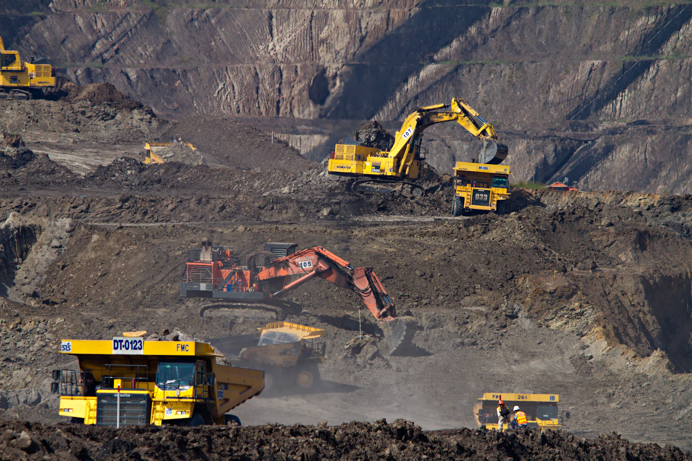

Operasi Penambangan Batu Bara
Menggerakkan Kemajuandengan Tambang Bertanggung Jawab
Operasi penambangan batu bara yang terencana, terukur, dan profesional — dari area pit hingga stockpile, dengan keselamatan kerja sebagai fondasi setiap aktivitas.